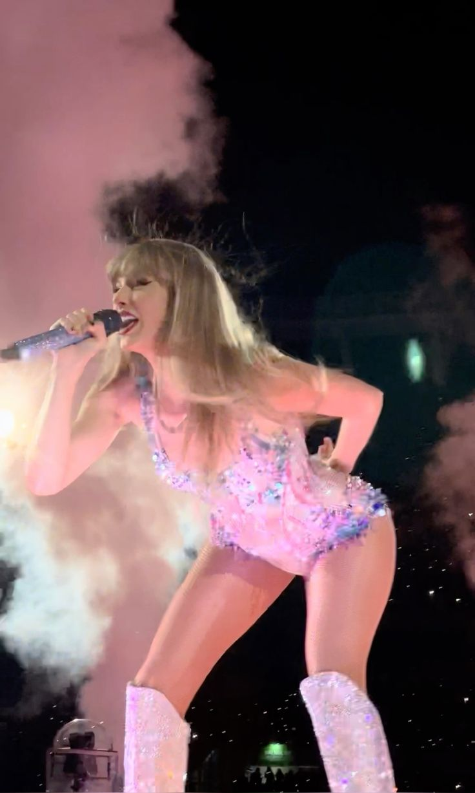
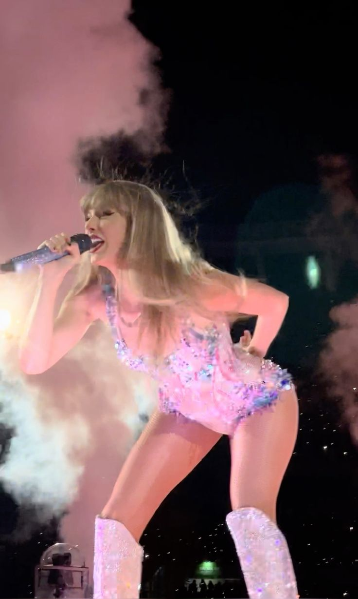

The Eras Tour (2023-2025)
The Eras Tour es la sexta gira de conciertos de Taylor Swift y una de las más grandes y ambiciosas de su carrera. A diferencia de sus giras anteriores, esta celebra toda su trayectoria artística, recorriendo las distintas “eras” o etapas musicales de su vida. Cada parte del espectáculo representa un álbum diferente, con vestuarios, escenografía y canciones que reflejan el estilo y la estética de cada uno, desde Taylor Swift (2006) y Fearless (2008) hasta Midnights (2022).
La gira comenzó en marzo de 2023 en Glendale, Arizona, y se convirtió en un fenómeno cultural mundial. Con una duración de más de tres horas y una lista de más de cuarenta canciones, el show combina luces, pantallas gigantes, efectos visuales y una conexión emocional muy fuerte con el público.
En noviembre de 2023, Taylor Swift llevó The Eras Tour a Buenos Aires, Argentina, con tres conciertos en el Estadio River Plate. Fue la primera vez que la artista se presentó en el país, y los shows fueron históricos. Miles de fans acamparon durante semanas para conseguir un lugar cerca del escenario, y la emoción fue total. Durante sus presentaciones, Taylor destacó la energía del público argentino, agradeció en español y hasta cambió algunas frases de sus canciones para dedicarle momentos especiales a los fans locales.
La gira también se transformó en una película, Taylor Swift: The Eras Tour, grabada en los conciertos de Los Ángeles, que permitió que millones de personas pudieran vivir la experiencia en cines de todo el mundo.
The Eras Tour no solo repasa la evolución musical de Taylor Swift, sino también su crecimiento como artista y figura cultural. En Buenos Aires, esa conexión con sus fans quedó más clara que nunca: una verdadera celebración de todas sus eras y de su historia compartida con el público.
 
